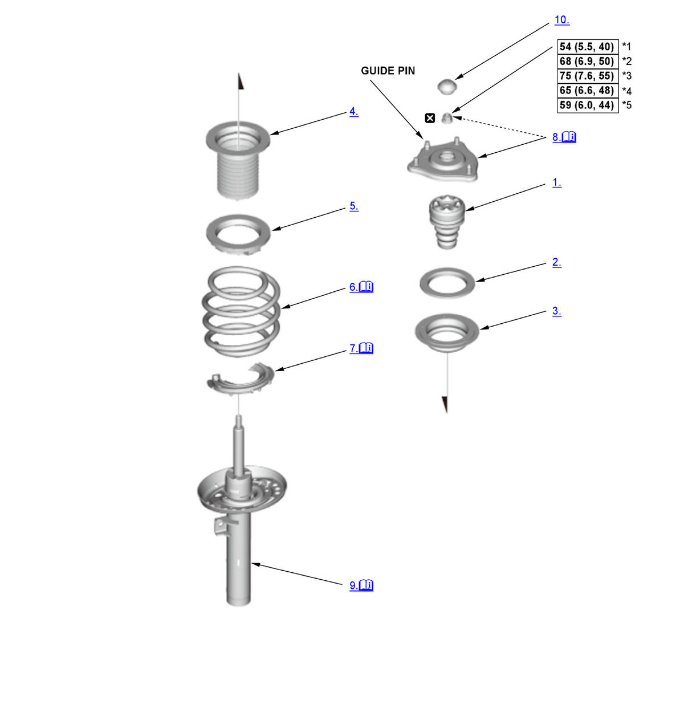
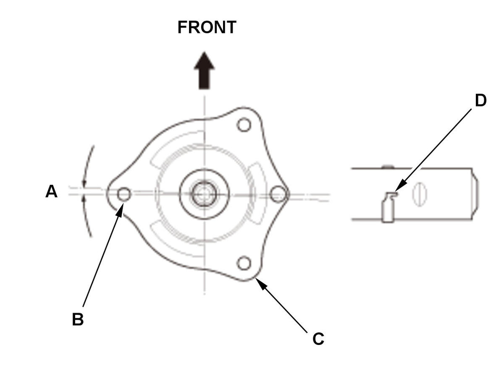
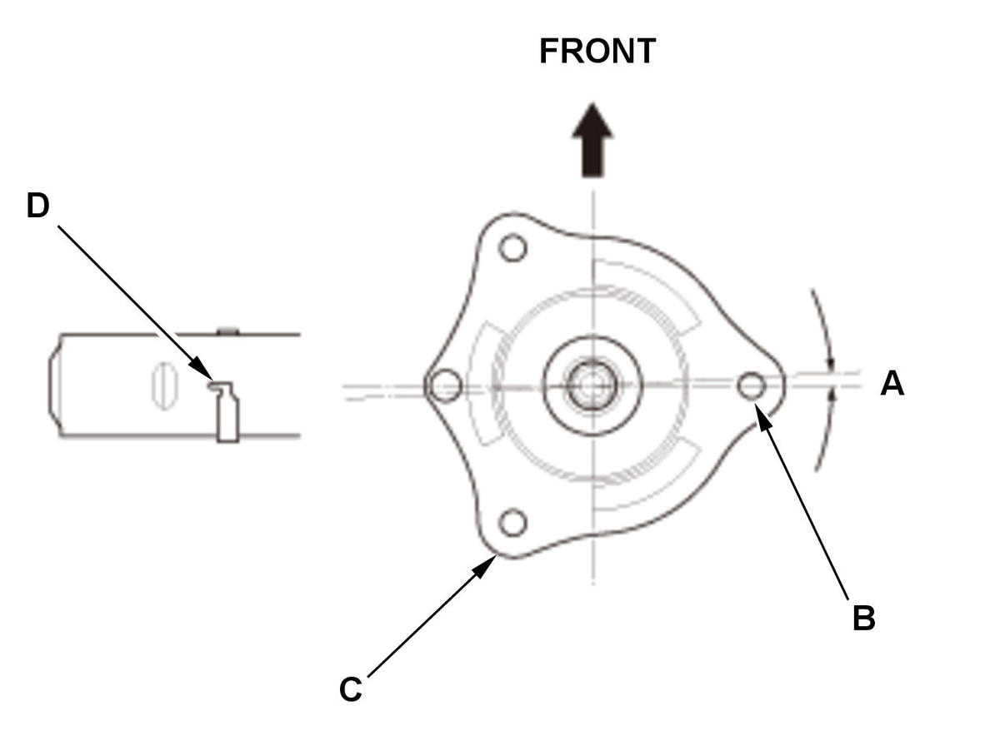
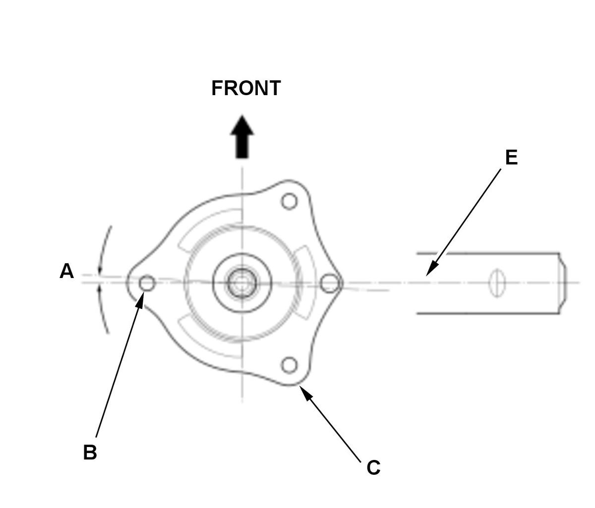
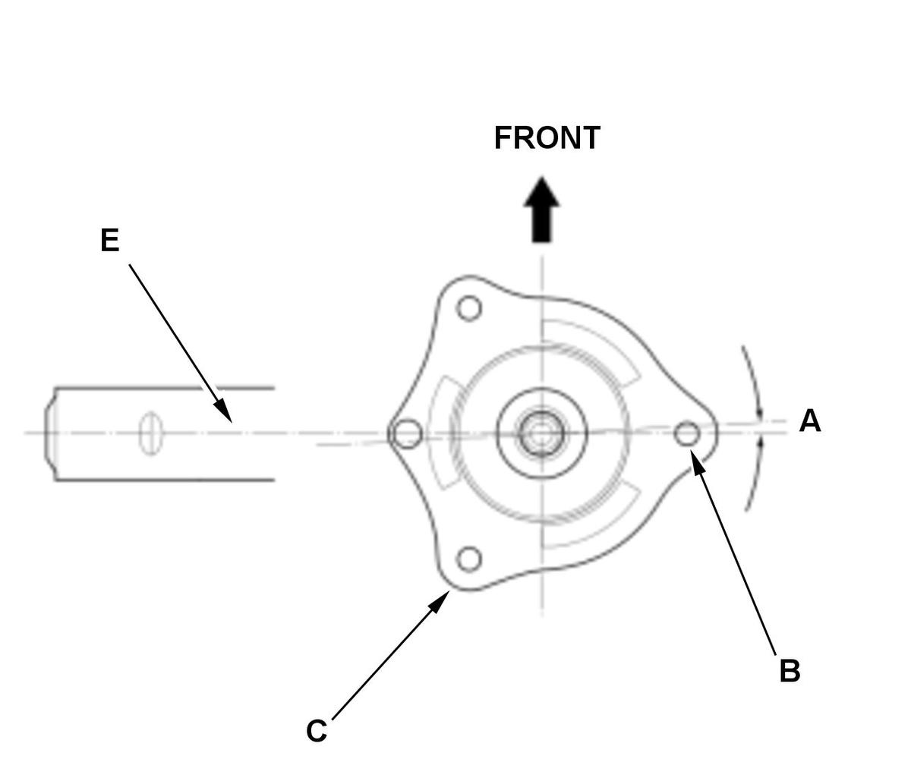
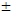

Front Damper/Spring Disassembly, Reassembly, and Inspection: Reassembly: Procedure
Numbered call-outs in figure pertain to list numbers in following procedure.

Courtesy of HONDA, U.S.A., INC. |
Detailed information, notes, and precautions |
 |
Torque: N.m (kgf.m, lbf.ft) |
 |
Replace |
| *1 | 2/4-door (Except Si) (screw guide pin type) |
| *2 | 5-door (Except Type-R) |
| *3 | 2/4-door (Except Si) (hex guide pin type) |
| *4 | Si |
| *5 | Type-R |
- Bump Stop - Install
- Damper Mounting Bearing - Install
- Upper Spring Seat - Install
- Dust Cover - Install
- Upper Spring Seat Rubber - Install
- Damper Spring - Install
1. Install the damper spring (A) on the upper spring seat rubber (B) by aligning the upper end (C) of the damper spring with the ledge portion (D) of the upper spring seat rubber. - Lower Spring Seat Rubber - Remove
1. Install the damper spring (A) on the lower spring seat rubber (B) by aligning the upper end (C) of the damper spring with the ledge portion (D) of the lower spring seat. - Damper Mounting Base - Set
1. Set the damper mounting base/damper spring (A) to the strut spring compressor. 2. Compress the damper spring.
NOTE: Do not compress the spring excessively.
- Damper Unit - Install
1. Install the damper unit (A) to the damper spring/damper mounting base. 2. Align the raised portions (B) of the lower spring seat rubber and the holes (C) of the lower spring seat on the damper unit.
NOTE: After reassembling the damper/spring, make sure that the dust cover (D) are properly positioned into the raised portion (E) of the damper unit.
Left side (Except Type-R) 



Courtesy of HONDA, U.S.A., INC.HONDA, U.S.A., INC.HONDA, U.S.A., INC.HONDA, U.S.A., INC.Right side (Except Type-R)
Left side (Type-R)
Right side (Type-R)
3. Align the angle (A) of the stud (B) on the damper mounting base (C) with the aligning tab (Except Type-R) (D) or with the center line (Type-R) (E) of the damper unit as shown. Specified Angle:
Type-R: 0° 
5°2/4-door: 0° 3° 5-door (Except Type-R): 0° 7° 4. Install the self-locking nut (A). 5. Hold the damper shaft using a hex wrench (B), and tighten the self-locking nut using the strut nut adapter (C) to the specified torque.
6. Remove the damper/spring from the strut spring compressor.
- Damper Cap - Install